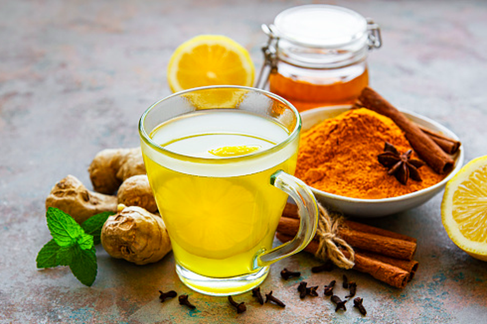
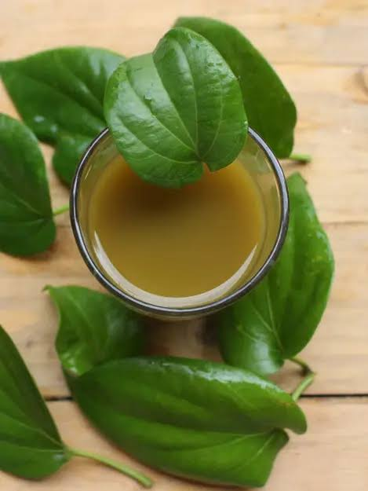

Jamu Temulawak
Temulawak (Curcuma zanthorrhiza) adalah tanaman herbal asli Indonesia yang kerap dimanfaatkan untuk mengobati berbagai masalah kesehatan, mulai dari kurang nafsu makan, gangguan lambung, sembelit, diare, demam, radang sendi, hingga gangguan fungsi hati.
Detail Jamu Temulawak
Jamu Beras Kencur
Beras kencur adalah minuman penyegar khas Jawa. Minuman ini juga digolongkan sebagai jamu karena memiliki khasiat meningkatkan nafsu makan. Beras kencur sangat populer karena memiliki rasa yang manis dan segar. Bahan utama beras kencur adalah beras dan kencur.
Detail Jamu Beras Kencur

Jamu Kunci Sirih
Jamu gendong kunci sirih merupakan campuran bahan segar daririmpang temu kunci (Boesenbergia pandurata (Roxb.) Schlecht) dan daun sirih (Piper betle L.) yang memiliki kandungan senyawa yang dapat berperan sebagaiantidiabetes.
Detail Jamu Kunci Sirih